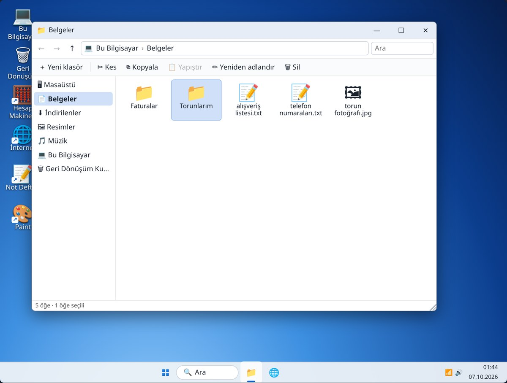
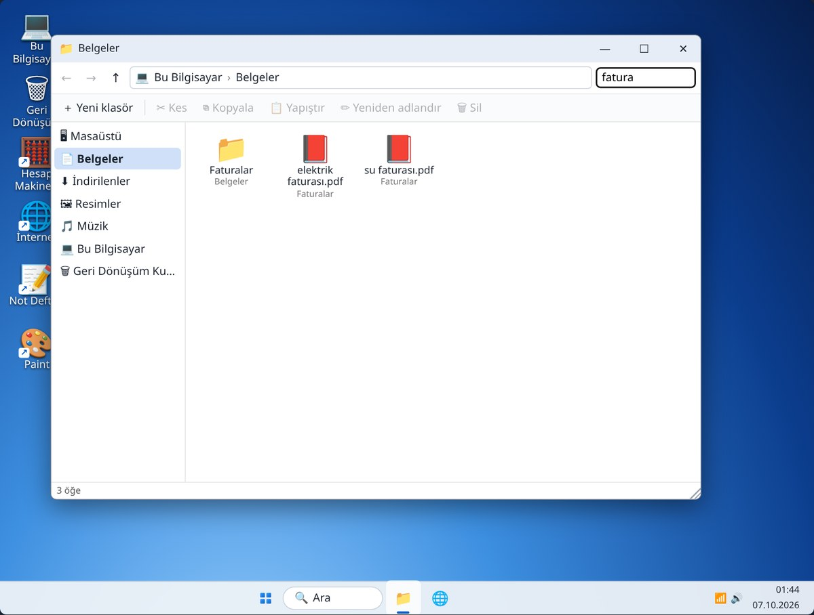
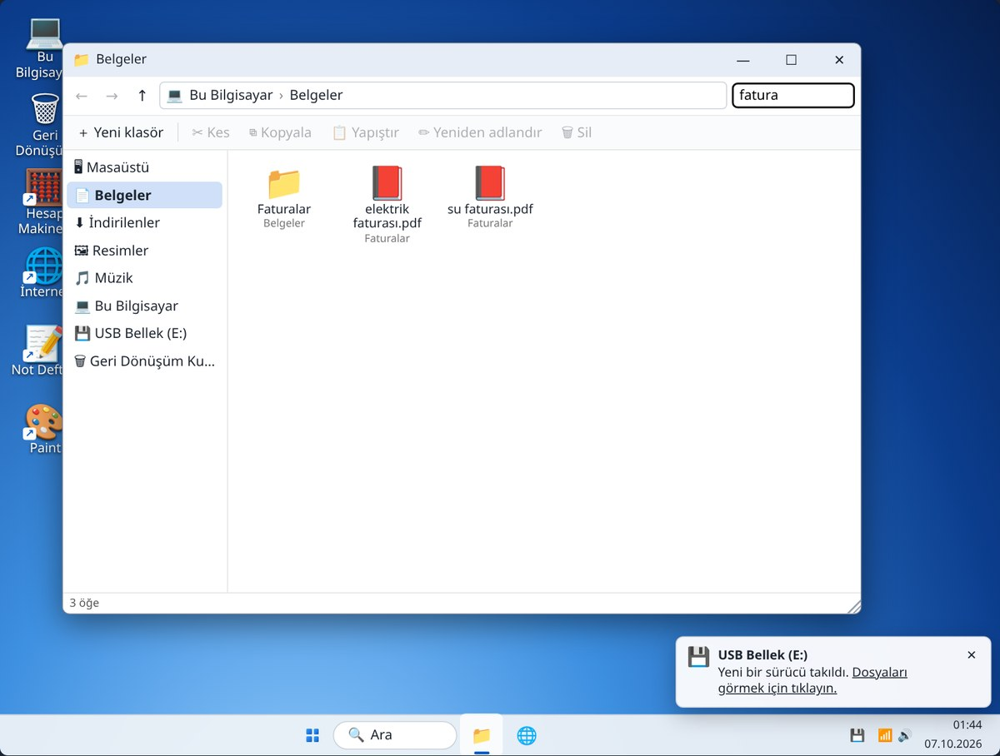

6. Hafta: Dosyalar ve klasörler
Alıştırmalar
Bu hafta
Alıştırma 1
| Yeni klasör | Üstteki ＋ Yeni klasör’e tıklayın, adı seçili gelir: Torunlarım yazıp Enter. |
|---|---|
| Ad değiştir | alışveriş listesi’ne bir kez tıklayın, F2 tuşuna basın, market listesi yazıp Enter. |
Dosyanın adı değişir; içindeki yazı aynı kalır.

Alıştırma 2
| Taşı | torun fotoğrafı’nı tutup Torunlarım klasörünün üzerine sürükleyin. Klasör maviye boyanınca bırakın. |
|---|---|
| Geri | Sol üstteki ← okuna tıklayın: bir önceki klasöre dönersiniz. |
| Kopyala | telefon numaraları’nı seçin → Kopyala (Ctrl + C) → Masaüstü’ne gidin → Yapıştır (Ctrl + V). |
Taşımada dosya yer değiştirir. Kopyalamada asıl dosya yerinde kalır, bir kopyası oluşur.
Alıştırma 3
Yanlışlıkla silmelerde bu kutu bir can simididir. Kutuyu boşaltırsanız içindekiler tamamen silinir.
Alıştırma 4

Alıştırma 5
| Tak | USB belleği bilgisayara takın: soldaki listeye USB Bellek (E:) eklenir. |
|---|---|
| Kopyala | Resimler’deki tatil fotoğrafını USB’nin üzerine sürükleyin. Farklı sürücüye sürüklenen dosya kopyalanır. |
| Çıkar | Çekmeden önce ⏏ Çıkar. “Artık çıkarılabilir” yazısını görünce çekin. |

Özet
| ＋ Yeni klasör | Boş klasör; adını hemen yazın |
|---|---|
| F2 | Seçili dosyanın adını değiştir |
| Sürükle-bırak | Dosyayı klasöre taşı (USB’ye sürüklemek kopyalar) |
| Ctrl + C → Ctrl + V | Dosyayı kopyala-yapıştır |
| Delete | Sil (Geri Dönüşüm Kutusu’na gider) |
| ♻ Geri yükle | Silineni eski yerine koyar |
| ⏏ Çıkar | USB belleği çekmeden önce |